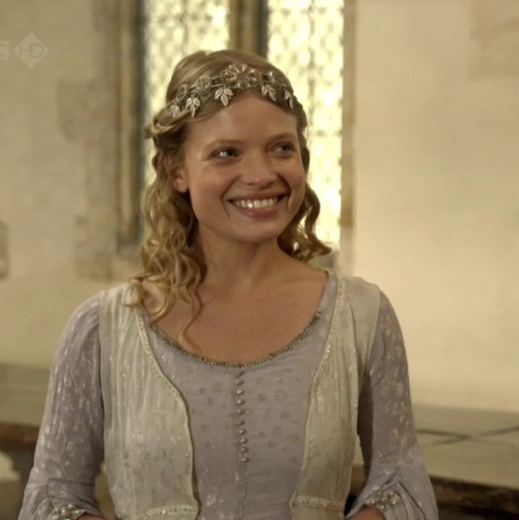
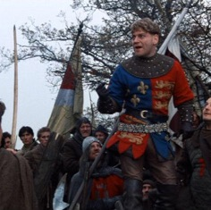
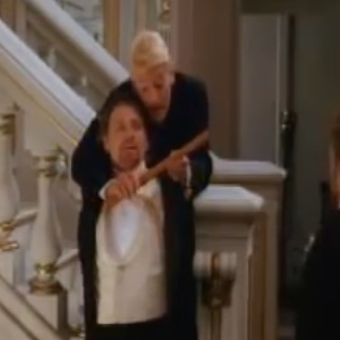
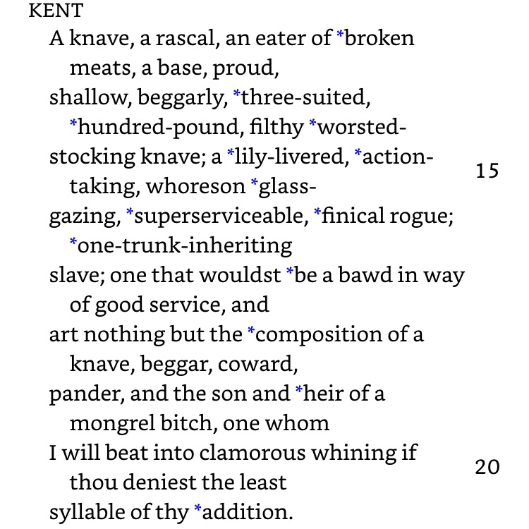
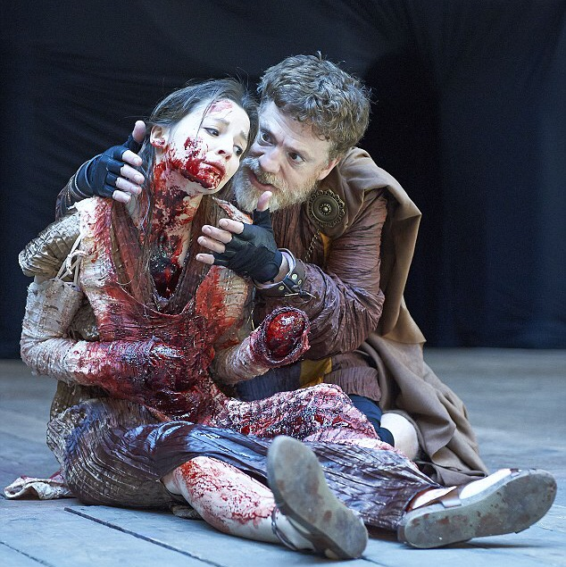
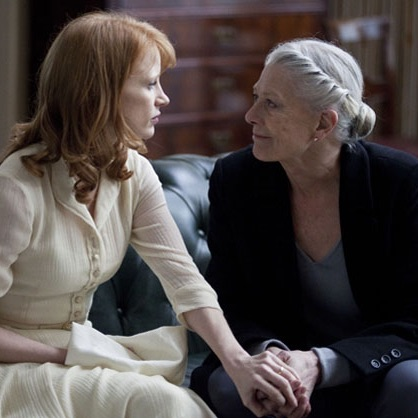
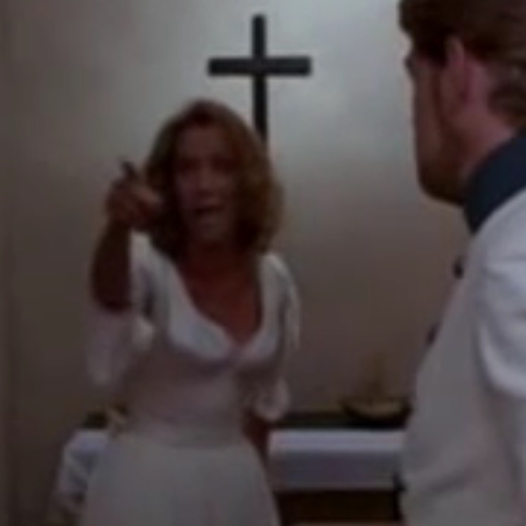
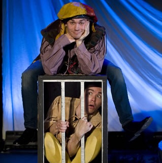

SUPERLATIVE SHAKESPEARE
-

Cutest scene
Henry V Act V Scene II: When Henry flirts with Katherine of France.
-
Funniest fight
A Midsummer Night's Dream Act III Scene II: When Hermia and Helena fight and Hermia gets a complex about her height.
-

Best motivational speech
Henry V Act IV Scene III: We happy few, we band of brothers.
-
Best emo speech
Richard II Act III Scene II: "Let's talk of graves, of worms and epitaphs."
-
Most transcendent speech
Antony and Cleopatra: Act V Scene II: When Cleopatra resolves to die. "Give me my robe. Put on my crown. I have immortal longings in me..."
-

Best verbal undressing
Hamlet Act III Scene II: When Hamlet compares Guildenstern's attempts to manipulate him to playing the recorder. "You would play upon me, you would seem to know my stops…"
-

Best insult
Tie. 1: King Lear Act II Scene II: Kent tells off his son with seven lines of continuous insult. 2: Hamlet Act II Scene II: When Hamlet is disgusted. by Polonius' lack of literary taste during the Priam recitation. "He's for a jig or a tale of bawdry, or he sleeps! Say on..."
-

Most brutal scene
Titus Andronicus Act II Scene IV: The rape and mutilation of Lavinia.
-

Most questionable parenting
Coriolanus Act I Scene III: When Volumnia speaks joyfully of her sons near-fatal battle injuries and says if he had died, "Then his good report should have been my son."
-

Most subversively feminist speech
Much Ado About Nothing Act IV Scene I: Beatrice's "oh that I were a man" speech. "I cannot be a man with wishing, therefore I will die a woman with grieving."
-

Cruelest comedy
Twelfth Night Act IV Scene II: When Feste the otherwise friendly clown torments the falsely-imprisoned and terrified Malvolio. "Madman thou errest. I say there is no darkness but ignorance."